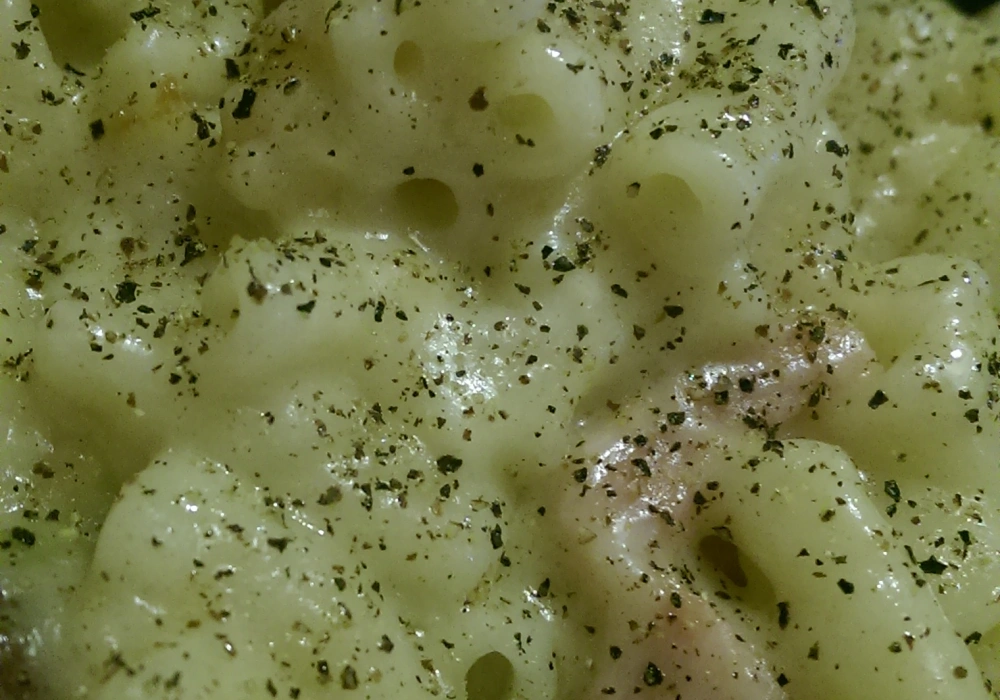

Thanksgiving Mac and Cheese

Description
We all know Chandler doesn’t eat Thanksgiving food. So, when Ross brings him home for Thanksgiving, Monica meets Chandler for the first time and makes him some mac and cheese. It’s so good, Chandler says she should be a chef. This visit certainly changes the trajectory of Monica’s life, in more ways than one!
Ingredients
- 120g Flour
- 120g Butter
- Milk
- Spring Onions
- Bacon
- Cheddar Cheese
- 500g (1 packet) Macaroni
Steps
- Grate cheese, chop onions and bacon. Fry bacon without oil.
- Melt butter, add onions briefly. Stir in flour to form dough.
- Gradually add milk, stirring until absorbed. Season and add bacon.
- Stir in cheese to taste.
- Cook macaroni separately.
- Combine sauce and macaroni in oven dish. Top with cheese.
- Bake at 200°C/gas mark 6 for 30 minutes until golden.